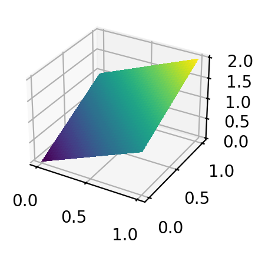

2.2. Background: review of vector spaces and matrix inverses#
In this section, we introduce some basic linear algebra concepts that will be needed throughout this chapter (and later on).
2.2.1. Subspaces#
Throughout, we work over the vector space \(V = \mathbb{R}^n\). We will use the notation \([m] = \{1,\ldots,m\}\).
We begin with the concept of a linear subspace.
DEFINITION (Linear Subspace) A linear subspace of \(\mathbb{R}^n\) is a subset \(U \subseteq \mathbb{R}^n\) that is closed under vector addition and scalar multiplication. That is, for all \(\mathbf{u}_1, \mathbf{u}_2 \in U\) and \(\alpha \in \mathbb{R}\), it holds that
It follows from this condition that \(\mathbf{0} \in U\). \(\natural\)
Alternatively, we can check these conditions by proving that (1) \(\mathbf{0} \in U\) and (2) \(\mathbf{u}_1, \mathbf{u}_2 \in U\) and \(\alpha \in \mathbb{R}\) imply that \(\alpha \mathbf{u}_1 + \mathbf{u}_2 \in U\). Indeed, taking \(\alpha = 1\) gives the first condition above, while choosing \(\mathbf{u}_2 = \mathbf{0}\) gives the second one.
NUMERICAL CORNER: The plane \(P\) made of all points \((x,y,z) \in \mathbb{R}^3\) that satisfy \(z = x+y\) is a linear subspace. Indeed, \(0 = 0 + 0\) so \((0,0,0) \in P\). And, for any \(\mathbf{u}_1 = (x_1, y_1, z_1)\) and \(\mathbf{u}_2 = (x_2, y_2, z_2)\) such that \(z_1 = x_1 + y_1\) and \(z_2 = x_2 + y_2\) and for any \(\alpha \in \mathbb{R}\), we have
That is, \(\alpha \mathbf{u}_1 + \mathbf{u}_2\) satisfies the condition defining \(P\) and therefore is itself in \(P\). Note also that \(P\) passes through the origin.
In this example, the linear subspace \(P\) can be described alternatively as the collection of every vector of the form \((x, y, x+y)\).
We use plot_surface to plot it over a grid of points created using numpy.meshgrid.
x = np.linspace(0,1,num=101)
y = np.linspace(0,1,num=101)
X, Y = np.meshgrid(x, y)
print(X)
[[0. 0.01 0.02 ... 0.98 0.99 1. ]
[0. 0.01 0.02 ... 0.98 0.99 1. ]
[0. 0.01 0.02 ... 0.98 0.99 1. ]
...
[0. 0.01 0.02 ... 0.98 0.99 1. ]
[0. 0.01 0.02 ... 0.98 0.99 1. ]
[0. 0.01 0.02 ... 0.98 0.99 1. ]]
print(Y)
[[0. 0. 0. ... 0. 0. 0. ]
[0.01 0.01 0.01 ... 0.01 0.01 0.01]
[0.02 0.02 0.02 ... 0.02 0.02 0.02]
...
[0.98 0.98 0.98 ... 0.98 0.98 0.98]
[0.99 0.99 0.99 ... 0.99 0.99 0.99]
[1. 1. 1. ... 1. 1. 1. ]]
Z = X + Y
print(Z)
[[0. 0.01 0.02 ... 0.98 0.99 1. ]
[0.01 0.02 0.03 ... 0.99 1. 1.01]
[0.02 0.03 0.04 ... 1. 1.01 1.02]
...
[0.98 0.99 1. ... 1.96 1.97 1.98]
[0.99 1. 1.01 ... 1.97 1.98 1.99]
[1. 1.01 1.02 ... 1.98 1.99 2. ]]
Show code cell source
fig = plt.figure()
ax = fig.add_subplot(111, projection='3d')
ax.plot_surface(
X, Y, Z, cmap=plt.cm.viridis, antialiased=False)
plt.show()

\(\unlhd\)
Here is a key example of a linear subspace.
DEFINITION (Span) Let \(\mathbf{w}_1, \ldots, \mathbf{w}_m \in \mathbb{R}^n\). The span of \(\{\mathbf{w}_1, \ldots, \mathbf{w}_m\}\), denoted \(\mathrm{span}(\mathbf{w}_1, \ldots, \mathbf{w}_m)\), is the set of all linear combinations of the \(\mathbf{w}_j\)’s. That is,
By convention, we declare that the span of the empty list is \(\{\mathbf{0}\}\). \(\natural\)
EXAMPLE: (continued) In the example above, we noted that the plane \(P\) is the collection of every vector of the form \((x, y, x+y)\). These can be written as \(x \,\mathbf{w}_1 + y \,\mathbf{w}_2\) where \(\mathbf{w}_1 = (1,0,1)\) and \(\mathbf{w}_2 = (0,1,1)\), and vice versa. Hence \(P = \mathrm{span}(\mathbf{w}_1,\mathbf{w}_2)\). \(\lhd\)
We check next that a span is indeed a linear subspace:
LEMMA Let \(W=\mathrm{span}(\mathbf{w}_1, \ldots, \mathbf{w}_m)\). Then \(W\) is a linear subspace. \(\flat\)
We say that \(\mathbf{w}_1, \ldots, \mathbf{w}_m\) span \(W\).
Proof: First, \(\mathbf{0} = \sum_{j=1}^m 0\mathbf{w}_j \in W\). Second, let \(\mathbf{u}_1, \mathbf{u}_2 \in W\) and \(\alpha \in \mathbb{R}\). For \(i=1,2\), because \(\mathbf{u}_i\) is in the span of the \(\mathbf{w}_j\)’s, we can write
for some \(\beta_{ij} \in \mathbb{R}\) for \(j=1,\ldots,m\).
Therefore
So \(\alpha \,\mathbf{u}_1 + \mathbf{u}_2 \in W\).\(\square\)
CHAT & LEARN Consider the following problem:
Prove that if \(\{\mathbf{v}_1,\ldots,\mathbf{v}_n\}\) spans \(U\), then so does the list
\[ \{\mathbf{v}_1-\mathbf{v}_2, \mathbf{v}_2-\mathbf{v}_3,\ldots,\mathbf{v}_{n-1}-\mathbf{v}_n,\mathbf{v}_n\}, \]obtained by subtracting from each vector (except the last one) the following vector.
A popular AI chatbot (which shall remain nameless) provided the following solution:
Suppose that \(U = \text{span}(\mathbf{v}_1, \ldots, \mathbf{v}_n)\). Then for any vector \(\mathbf{v} \in U\), there exist scalars \(a_1, \ldots, a_n \in \mathbb{R}\) such that:
\[ \mathbf{v} = a_1\mathbf{v}_1 + a_2\mathbf{v}_2 + \ldots + a_n\mathbf{v}_n \]Now let’s express each vector in the new list in terms of the given vectors:
\(\mathbf{v}_1-\mathbf{v}_2 = a_1(\mathbf{v}_1-\mathbf{v}_2)\)
\(\mathbf{v}_2-\mathbf{v}_3 = (a_1 + a_2)(\mathbf{v}_2-\mathbf{v}_3)\)
\(\mathbf{v}_3-\mathbf{v}_4 = (a_1 + a_2 + a_3)(\mathbf{v}_3-\mathbf{v}_4)\)
\(\ldots\)
\(\mathbf{v}_{n-1} - \mathbf{v}_n = (a_1 + a_2 + \ldots + a_{n-1})(\mathbf{v}_{n-1}-\mathbf{v}_n)\)
Adding up all these expressions, we get:
\[ \mathbf{v} = a_1(\mathbf{v}_1-\mathbf{v}_2) + (a_1 + a_2)(\mathbf{v}_2-\mathbf{v}_3) + \ldots + (a_1 + a_2 + \ldots + a_{n-1})(\mathbf{v}_{n-1}-\mathbf{v}_n) + a_n\mathbf{v}_n \]This shows that \(\mathbf{v}\) can be expressed as a linear combination of the vectors in the new list, which means that the new list also spans \(U\). Therefore, the list \({\mathbf{v}_1-\mathbf{v}_2, \mathbf{v}_2-\mathbf{v}_3, \ldots, \mathbf{v}_{n-1}-\mathbf{v}_n, \mathbf{v}_n}\) spans \(U\), completing the proof.
Explain everything that is wrong with this answer and provide a correct alternative proof. \(\ddagger\)
In matrix form, we talk about the column space of a (not necessarily square) matrix.
DEFINITION (Column Space) Let \(A \in \mathbb{R}^{n\times m}\) be an \(n\times m\) matrix with columns \(\mathbf{a}_1,\ldots, \mathbf{a}_m \in \mathbb{R}^n\). The column space of \(A\), denoted \(\mathrm{col}(A)\), is the span of the columns of \(A\), that is, \(\mathrm{col}(A) = \mathrm{span}(\mathbf{a}_1,\ldots, \mathbf{a}_m)\). \(\natural\)
When thinking of \(A\) as a linear map, the column space is often referred to as the range or image.
We will need another important linear subspace defined in terms of a matrix. This one is defined implicitly in terms of the given matrix.
DEFINITION (Null Space) Let \(B \in \mathbb{R}^{n \times m}\). The null space of \(B\) is the linear subspace
\(\natural\)
It can be shown that the null space is a linear subspace. We give a simple example next.
EXAMPLE: (continued) Going back to the linear subspace \(P = \{(x,y,z)^T \in \mathbb{R}^3 : z = x + y\}\), the condition in the definition can be re-written as \(x + y - z = 0\). Hence \(P = \mathrm{null}(B)\) for the single-row matrix \(B = \begin{pmatrix} 1 & 1 & - 1\end{pmatrix}\). \(\lhd\)
2.2.2. Linear independence and bases#
It is often desirable to avoid redundancy in the description of a linear subspace.
We start with an example.
EXAMPLE: Consider the linear subspace \(\mathrm{span}(\mathbf{w}_1,\mathbf{w}_2,\mathbf{w}_3)\), where \(\mathbf{w}_1 = (1,0,1)\), \(\mathbf{w}_2 = (0,1,1)\), and \(\mathbf{w}_3 = (1,-1,0)\). We claim that
Recall that to prove an equality between sets, it suffices to prove inclusion in both directions.
First, it is immediate by definition of the span that
To prove the other direction, let \(\mathbf{u} \in \mathrm{span}(\mathbf{w}_1,\mathbf{w}_2,\mathbf{w}_3)\) so that
Now observe that \((1,-1,0) = (1,0,1) - (0,1,1)\). Put differently, \(\mathbf{w}_3 \in \mathrm{span}(\mathbf{w}_1,\mathbf{w}_2)\). Replacing above gives
which shows that \(\mathbf{u} \in \mathrm{span}(\mathbf{w}_1,\mathbf{w_2})\). In words, \((1,-1,0)^T\) is redundant. Hence
and that concludes the proof.\(\lhd\)
DEFINITION (Linear Independence) A list of nonzero vectors \(\mathbf{u}_1,\ldots,\mathbf{u}_m\) is linearly independent if none of them can be written as a linear combination of the others, that is,
By convention, we declare the empty list to be linearly independent. A list of vectors is called linearly dependent if it is not linearly independent. \(\natural\)
EXAMPLE: (continued) In the previous example, \(\mathbf{w}_1,\mathbf{w}_2,\mathbf{w}_3\) are not linearly independent, because we showed that \(\mathbf{w}_3\) can be written as a linear combination of \(\mathbf{w}_1,\mathbf{w}_2\). On the other hand, \(\mathbf{w}_1,\mathbf{w}_2\) are linearly independent because there is no \(\alpha, \beta \in \mathbb{R}\) such that \((1,0,1) = \alpha\,(0,1,1)\) or \((0,1,1) = \beta\,(1,0,1)\). Indeed, the first equation requires \(1 = \alpha \, 0\) (first component) and the second one requires \(1 = \beta \, 0\) (second component) - both of which have no solution. \(\lhd\)
KNOWLEDGE CHECK: Consider the \(2 \times 2\) matrix
where all entries are non-zero. Under what condition on the entries of \(A\) are its columns linearly independent? Explain your answer. \(\ddagger\)
EXAMPLE: Consider the \(2 \times 2\) matrix
We show that the columns
are linearly dependent if \(ad - bc = 0\). You may recognize the quantity \(ad - bc\) as the determinant of \(A\), an important algebraic quantity which nevertheless play only a small role in this book.
We consider two cases.
Suppose first that all entries of \(A\) are non-zero. In that case, \(ad = bc\) implies \(d/c = b/a =: \gamma\). Multiplying \(\mathbf{u}_1\) by \(\gamma\) gives
Hence \(\mathbf{u}_2\) is a multiple of \(\mathbf{u_1}\) and these vectors are therefore not linearly independent.
Suppose instead that at least one entry of \(A\) is zero. We detail the case \(a = 0\), with all other cases being similar. By condition \(ad = bc\), we get that \(bc = 0\). That is, either \(b=0\) or \(c=0\). Either way, the second column of \(A\) is then a multiple of the first one, establishing the claim. \(\lhd\)
LEMMA (Equivalent Definition of Linear Independence) Vectors \(\mathbf{u}_1,\ldots,\mathbf{u}_m\) are linearly independent if and only if
Equivalently, \(\mathbf{u}_1,\ldots,\mathbf{u}_m\) are linearly dependent if and only if there exist \(\alpha_j\)’s, not all zero, such that \(\sum_{j=1}^m \alpha_j \mathbf{u}_j = \mathbf{0}\).
\(\flat\)
Proof: We prove the second statement.
Assume \(\mathbf{u}_1,\ldots,\mathbf{u}_m\) are linearly dependent. Then \(\mathbf{u}_i = \sum_{j\neq i} \alpha_j \mathbf{u}_j\) for some \(i\). Taking \(\alpha_i = -1\) gives \(\sum_{j=1}^m \alpha_j \mathbf{u}_j = \mathbf{0}\).
Assume \(\sum_{j=1}^m \alpha_j \mathbf{u}_j = \mathbf{0}\) with \(\alpha_j\)’s not all zero. In particular \(\alpha_i \neq 0\) for some \(i\). Then
\(\square\)
In matrix form: let \(\mathbf{a}_1,\ldots,\mathbf{a}_m \in \mathbb{R}^n\) and form the matrix whose columns are the \(\mathbf{a}_i\)’s
Note that \(A\mathbf{x}\) is the following linear combination of the columns of \(A\): \(\sum_{j=1}^m x_j \mathbf{a}_j\). Hence \(\mathbf{a}_1,\ldots,\mathbf{a}_m\) are linearly independent if and only if \(A \mathbf{x} = \mathbf{0} \implies \mathbf{x} = \mathbf{0}\). In terms of the null space of \(A\), this last condition translates into \(\mathrm{null}(A) = \{\mathbf{0}\}\).
Equivalently, \(\mathbf{a}_1,\ldots,\mathbf{a}_m\) are linearly dependent if and only if \(\exists \mathbf{x}\neq \mathbf{0}\) such that \(A \mathbf{x} = \mathbf{0}\). Put differently, this last condition means that there is a nonzero vector in the null space of \(A\).
In this book, we will typically not be interested in checking these types of conditions by hand, but here is a simple example.
EXAMPLE: (Checking linear independence by hand) Suppose we have the following vectors
To determine if these vectors are linearly independent, we need to check if the equation
implies \(\alpha_1 = 0\), \(\alpha_2 = 0\), and \(\alpha_3 = 0\).
Substituting the vectors, we get
This gives us the following system of equations
We solve this system step-by-step.
From the first equation, we have
Substitute \(\alpha_1 = -5\alpha_3\) into the second equation
Now, substitute \(\alpha_1 = -5\alpha_3\) and \(\alpha_2 = 4\alpha_3\) into the third equation
Since \(\alpha_3 = 0\), we also have
Thus, \(\alpha_1 = 0\), \(\alpha_2 = 0\), and \(\alpha_3 = 0\).
Since the only solution to the system is the trivial solution where \(\alpha_1 = \alpha_2 = \alpha_3 = 0\), the vectors \(\mathbf{v}_1, \mathbf{v}_2, \mathbf{v}_3\) are linearly independent. \(\lhd\)
Bases give a convenient – non-redundant – representation of a subspace.
DEFINITION (Basis) Let \(U\) be a linear subspace of \(\mathbb{R}^n\). A basis of \(U\) is a list of vectors \(\mathbf{u}_1,\ldots,\mathbf{u}_m\) in \(U\) that: (1) span \(U\), that is, \(U = \mathrm{span}(\mathbf{u}_1,\ldots,\mathbf{u}_m)\); and (2) are linearly independent. \(\natural\)
We denote by \(\mathbf{e}_1, \ldots, \mathbf{e}_n\) the standard basis of \(\mathbb{R}^n\), where \(\mathbf{e}_i\) has a one in coordinate \(i\) and zeros in all other coordinates (see the example below). The basis of the linear subspace \(\{\mathbf{0}\}\) is the empty list (which, by convention, is independent and has span \(\{\mathbf{0}\}\)).
EXAMPLE: (continued) In the previous example, the vectors \(\mathbf{w}_1,\mathbf{w}_2\) are a basis of their span \(U = \mathrm{span}(\mathbf{w}_1,\mathbf{w}_2)\). Indeed the first condition is trivially satisfied. Plus, we have shown above that \(\mathbf{w}_1,\mathbf{w}_2\) are linearly independent. \(\lhd\)
EXAMPLE: For \(i=1,\ldots,n\), recall that \(\mathbf{e}_i \in \mathbb{R}^n\) is the vector with entries
Then \(\mathbf{e}_1, \ldots, \mathbf{e}_n\) form a basis of \(\mathbb{R}^n\), as each vector is in \(\mathbb{R}^n\). It is known as the standard basis of \(\mathbb{R}^n\). Indeed, clearly \(\mathrm{span}(\mathbf{e}_1, \ldots, \mathbf{e}_n) \subseteq \mathbb{R}^n\). Moreover, any vector \(\mathbf{u} = (u_1,\ldots,u_n)^T \in \mathbb{R}^n\) can be written as
So \(\mathbf{e}_1, \ldots, \mathbf{e}_n\) spans \(\mathbb{R}^n\). Furthermore,
since \(\mathbf{e}_i\) has a non-zero \(i\)-th entry while all vectors on the right-hand side have a zero in entry \(i\). So the vectors \(\mathbf{e}_1, \ldots, \mathbf{e}_n\) are linearly independent. \(\lhd\)
A key property of a basis is that it provides a unique representation of the vectors in the subspace. Indeed, let \(U\) be a linear subspace and \(\mathbf{u}_1,\ldots,\mathbf{u}_m\) be a basis of \(U\). Suppose that \(\mathbf{w} \in U\) can be written as both \(\mathbf{w} = \sum_{j=1}^m \alpha_j \mathbf{u}_j\) and \(\mathbf{w} = \sum_{j=1}^m \alpha_j' \mathbf{u}_j\). Then subtracting one equation from the other we arrive at \(\sum_{j=1}^m (\alpha_j - \alpha_j') \,\mathbf{u}_j = \mathbf{0}\). By linear independence, we have \(\alpha_j - \alpha_j' = 0\) for each \(j\). That is, there is only one way to express \(\mathbf{w}\) as a linear combination of the basis.
The basis itself on the other hand is not unique.
A second key property of a basis is that it always has the same number of elements, which is called the dimension of the subspace.
THEOREM (Dimension) Let \(U \neq \{\mathbf{0}\}\) be a linear subspace of \(\mathbb{R}^n\). Then all bases of \(U\) have the same number of elements. We call this number the dimension of \(U\) and denote it by \(\mathrm{dim}(U)\). \(\sharp\)
The proof is provided in an optional section. It relies on the Linear Dependence Lemma, which is also stated in that section. That fundamental lemma has many useful implications, some of which we state now.
A list of linearly independent vectors in a subspace \(U\) is referred to as an independent list in \(U\). A list of vectors whose span is \(U\) is referred to as a spanning list of \(U\). In the lemmas below, \(U\) is a linear subspace of \(\mathbb{R}^n\). The first and second lemmas are proved in a later section. The Dimension Theorem immediately follows from the first one (Why?).
LEMMA (Independent is Shorter than Spanning) The length of any independent list in \(U\) is less or equal than the length of any spanning list of \(U\). \(\flat\)
LEMMA (Completing an Independent List) Any independent list in \(U\) can be completed into a basis of \(U\). \(\flat\)
LEMMA (Reducing a Spanning List) Any spanning list of \(U\) can be reduced into a basis of \(U\). \(\flat\)
We mention a few observations implied by the previous lemmas.
Observation D1: Any linear subspace \(U\) of \(\mathbb{R}^n\) has a basis. To show this, start with the empty list and use the Completing an Independent List Lemma to complete it into a basis of \(U\). Observe further that, instead of an empty list, we could have initialized the process with a list containing any vector in \(U\). That is, for any non-zero vector \(\mathbf{u} \in U\), we can construct a basis of \(U\) that includes \(\mathbf{u}\).
Observation D2: The dimension of any linear subspace \(U\) of \(\mathbb{R}^n\) is smaller or equal than \(n\). Indeed, because a basis of \(U\) is an independent list in the full space \(\mathbb{R}^n\), by the Completing an Independent List Lemma it can be completed into a basis of \(\mathbb{R}^n\), which has \(n\) elements by Dimension Theorem (and the fact that the standard basis has \(n\) elements). A similar statement holds more generally for nested linear subspaces \(U \subseteq V\), that is, \(\mathrm{dim}(U) \leq \mathrm{dim}(V)\).
Observation D3: The dimension of \(\mathrm{span}(\mathbf{u}_1,\ldots,\mathbf{u}_m)\) is at most \(m\). Indeed, by Reducing a Spanning List, the spanning list \(\mathbf{u}_1,\ldots,\mathbf{u}_m\) can be reduced into a basis, which therefore necessarily has fewer elements.
KNOWLEDGE CHECK: Does the matrix
have linearly independent columns? Justify your answer. \(\ddagger\)
A matrix \(A\) whose columns are linearly independent is said to have full column rank. We will come back later to the concept of the rank of a matrix.
2.2.3. A key concept: orthogonality#
Orthogonality plays a key role in linear algebra for data science thanks to its computational properties and its connection to the least-squares problem.
DEFINITION (Orthogonality) Vectors \(\mathbf{u}\) and \(\mathbf{v}\) in \(\mathbb{R}^n\) (as column vectors) are orthogonal if their inner product is zero
\(\natural\)
Recall the following standard properties of inner products. For one, they are symmetric in the sense that
Second, they are linear in each input: for any \(\mathbf{x}_1, \mathbf{x}_2, \mathbf{x}_3 \in \mathbb{R}^n\) and \(\beta \in \mathbb{R}\), it holds that
Repeated application of the latter property implies for instance that: for any \(\mathbf{x}_1, \ldots, \mathbf{x}_m, \mathbf{y}_1, \ldots, \mathbf{y}_\ell, \in \mathbb{R}^n\),
Finally recall that \(\|\mathbf{x}\|^2 = \langle \mathbf{x}, \mathbf{x} \rangle\).
Orthogonality has important implications. The following classical result will be useful below. Throughout, we use \(\|\mathbf{u}\|\) for the Euclidean norm of \(\mathbf{u}\).
LEMMA (Pythagoras) Let \(\mathbf{u}, \mathbf{v} \in \mathbb{R}^n\) be orthogonal. Then \(\|\mathbf{u} + \mathbf{v}\|^2 = \|\mathbf{u}\|^2 + \|\mathbf{v}\|^2\). \(\flat\)
Proof: Using \(\|\mathbf{w}\|^2 = \langle \mathbf{w}, \mathbf{w}\rangle\), we get
\(\square\)
Here is an application of Pythagoras.
LEMMA (Cauchy-Schwarz) For any \(\mathbf{u}, \mathbf{v} \in \mathbb{R}^n\), \(|\langle \mathbf{u}, \mathbf{v}\rangle| \leq \|\mathbf{u}\| \|\mathbf{v}\|\). \(\flat\)
Proof: Let \(\mathbf{q} = \frac{\mathbf{v}}{\|\mathbf{v}\|}\) be the unit vector in the direction of \(\mathbf{v}\). We want to show \(|\langle \mathbf{u}, \mathbf{q}\rangle| \leq \|\mathbf{u}\|\). Decompose \(\mathbf{u}\) as follows:
The two terms on the right-hand side are orthogonal:
So Pythagoras gives
Taking a square root gives the claim. \(\square\)
Orthonormal basis expansion To begin to see the power of orthogonality, consider the following. A list of vectors \(\{\mathbf{u}_1,\ldots,\mathbf{u}_m\}\) is an orthonormal list if the \(\mathbf{u}_i\)’s are pairwise orthogonal and each has norm 1, that is, for all \(i\) and all \(j \neq i\), we have \(\|\mathbf{u}_i\| = 1\) and \(\langle \mathbf{u}_i, \mathbf{u}_j \rangle = 0\). Alternatively,
LEMMA (Properties of Orthonormal Lists) Let \(\{\mathbf{u}_1,\ldots,\mathbf{u}_m\}\) be an orthonormal list. Then:
for any \(\alpha_j \in \mathbb{R}\), \(j=1,\ldots,m\), we have
the vectors \(\{\mathbf{u}_1,\ldots,\mathbf{u}_m\}\) are linearly independent.
\(\flat\)
Proof: For 1., using that \(\|\mathbf{x}\|^2 = \langle \mathbf{x}, \mathbf{x} \rangle\), we have
where we used orthonormality in the last equation, that is, \(\langle \mathbf{u}_i, \mathbf{u}_j \rangle\) is \(1\) if \(i=j\) and \(0\) otherwise.
For 2., suppose \(\sum_{i=1}^m \beta_i \mathbf{u}_i = \mathbf{0}\), then we must have by 1. that \(\sum_{i=1}^m \beta_i^2 = 0\). That implies \(\beta_i = 0\) for all \(i\). Hence the \(\mathbf{u}_i\)’s are linearly independent. \(\square\)
Given a basis \(\{\mathbf{u}_1,\ldots,\mathbf{u}_m\}\) of \(U\), we know that: for any \(\mathbf{w} \in U\), \(\mathbf{w} = \sum_{i=1}^m \alpha_i \mathbf{u}_i\) for some \(\alpha_i\)’s. It is not immediately obvious in general how to find the \(\alpha_i\)’s. In the orthonormal case, however, there is a formula. We say that the basis \(\{\mathbf{u}_1,\ldots,\mathbf{u}_m\}\) is orthonormal if it forms an orthonormal list.
THEOREM (Orthonormal Expansion) Let \(\mathbf{q}_1,\ldots,\mathbf{q}_m\) be an orthonormal basis of \(U\) and let \(\mathbf{w} \in U\). Then
\(\sharp\)
Proof: Because \(\mathbf{w} \in U\), \(\mathbf{w} = \sum_{i=1}^m \alpha_i \mathbf{q}_i\) for some \(\alpha_i\). Take the inner product with \(\mathbf{q}_j\) and use orthonormality:
Hence, we have determined all \(\alpha_j\)’s in the basis expansion of \(\mathbf{w}\). \(\square\)
EXAMPLE: Consider again the linear subspace \(W = \mathrm{span}(\mathbf{w}_1,\mathbf{w}_2,\mathbf{w}_3)\), where \(\mathbf{w}_1 = (1,0,1)\), \(\mathbf{w}_2 = (0,1,1)\), and \(\mathbf{w}_3 = (1,-1,0)\). We have shown that in fact
as \(\mathbf{w}_1,\mathbf{w}_2\) form a basis of \(W\). On the other hand,
so this basis is not orthonormal. Indeed, an orthonormal list is necessarily an independent list, but the opposite may not hold.
To produce an orthonormal basis of \(W\), we can first proceed by normalizing \(\mathbf{w}_1\)
Then \(\|\mathbf{q}_1\| = 1\) since, in general, by homogeneity of the norm
We then seek a second basis vector. It must satisfy two conditions in this case:
it must be of unit norm and be orthogonal to \(\mathbf{q}_1\); and
\(\mathbf{w}_2\) must be a linear combination of \(\mathbf{q}_1\) and \(\mathbf{q}_2\).
The latter condition guarantees that \(\mathrm{span}(\mathbf{q}_1,\mathbf{q}_2) = \mathrm{span}(\mathbf{w}_1,\mathbf{w}_2)\). (Formally, that would imply only that \(\mathrm{span}(\mathbf{w}_1,\mathbf{w}_2) \subseteq \mathrm{span}(\mathbf{q}_1,\mathbf{q}_2)\). In this case, it is easy to see that the containment must go in the opposite direction as well. Why?)
The first condition translates into
where \(\mathbf{q}_2 = (q_{21}, q_{22}, q_{23})\), and
That is, simplifying the second display and plugging into the first, \(q_{23} = -q_{21}\) and \(q_{22} = \sqrt{1 - 2 q_{21}^2}\).
The second condition translates into: there is \(\beta_1, \beta_2 \in \mathbb{R}\) such that
The first entry gives \(\beta_1/\sqrt{2} + \beta_2 q_{21} = 0\) while the third entry gives \(\beta_1/\sqrt{2} - \beta_2 q_{21} = 1\). Adding up the equations gives \(\beta_1 = 1/\sqrt{2}\). Plugging back into the first one gives \(\beta_2 = -1/(2q_{21})\). Returning to the equation for \(\mathbf{w}_2\), we get from the second entry
Rearranging and taking a square, we want the negative solution to
that is, \(q_{21} = - 1/\sqrt{6}\). Finally, we get \(q_{23} = - q_{21} = 1/\sqrt{6}\) and \(q_{22} = \sqrt{1 - 2 q_{21}^2} = \sqrt{1 - 1/3} = \sqrt{2/3} = 2/\sqrt{6}\).
To summarize, we have
We confirm that
and
We can use the Orthonormal Expansion to write \(\mathbf{w}_2\) as a linear combination of \(\mathbf{q}_1\) and \(\mathbf{q}_2\). The inner products are
So
Check it! Try \(\mathbf{w}_3\). \(\lhd\)
Gram-Schmidt We have shown that working with orthonormal bases is desirable. What if we do not have one? We could try to construct one by hand as we did in the previous example. But there are better ways. We review the Gram-Schmidt algorithm in an upcoming section, which will imply that every linear subspace has an orthonormal basis. That is, we will prove the following theorem.
THEOREM (Gram-Schmidt) Let \(\mathbf{a}_1,\ldots,\mathbf{a}_m\) be linearly independent. Then there exists an orthonormal basis \(\mathbf{q}_1,\ldots,\mathbf{q}_m\) of \(\mathrm{span}(\mathbf{a}_1,\ldots,\mathbf{a}_m)\). \(\sharp\)
But, first, we will need to define the orthogonal projection, which will play a key role in our applications. This is done in the next section.
2.2.4. Inverses#
Recall the following important definition.
DEFINITION (Nonsingular Matrix) A square matrix \(A \in \mathbb{R}^{n \times n}\) is nonsingular if it has rank \(n\). In that case, we also say that \(A\) is of full rank. \(\natural\)
An implication of this is that \(A\) is nonsingular if and only if its columns form a basis of \(\mathbb{R}^n\). Indeed, suppose the columns of \(A\) form a basis of \(\mathbb{R}^n\). Then the dimension of \(\mathrm{col}(A)\) is \(n\), which means the rank is \(n\). In the other direction, suppose \(A\) has rank \(n\).
We first prove a general statement: the columns of \(Z \in \mathbb{R}^{k \times m}\) form a basis of \(\mathrm{col}(Z)\) whenever \(Z\) is of full column rank. Indeed, the columns of \(Z\) by definition span \(\mathrm{col}(Z)\). By the Reducing a Spanning List Lemma, they can be reduced into a basis of \(\mathrm{col}(Z)\). If \(Z\) has full column rank, then the length of any basis of \(\mathrm{col}(Z)\) is equal to the number of columns of \(Z\). So the columns of \(Z\) must already form a basis.
Apply the previous claim to \(Z = A\). Then, since the columns of \(A\) form an independent list in \(\mathbb{R}^n\), by the Completing an Independent List Lemma they can be completed into a basis of \(\mathbb{R}^n\). But there are already \(n\) of them, the dimension of \(\mathbb{R}^n\), so they must already form a basis of \(\mathbb{R}^n\). In other words, we have proved another general fact: an independent list of length \(n\) in \(\mathbb{R}^n\) is a basis of \(\mathbb{R}^n\).
Equivalently:
LEMMA (Invertibility) A square matrix \(A \in \mathbb{R}^{n \times n}\) is nonsingular if and only if there exists a unique \(A^{-1}\) such that
The matrix \(A^{-1}\) is referred to as the inverse of \(A\). We also say that \(A\) is invertible. \(\flat\)
Proof idea: We use the nonsingularity of \(A\) to write the columns of the identity matrix as unique linear combinations of the columns of \(A\).
Proof: Suppose first that \(A\) has rank \(n\). Then its columns are linearly independent and form a basis of \(\mathbb{R}^n\). In particular, for any \(i\) the standard basis vector \(\mathbf{e}_i\) can be written as a unique linear combination of the columns of \(A\), i.e., there is \(\mathbf{b}_i\) such that \(A \mathbf{b}_i =\mathbf{e}_i\). Let \(B\) be the matrix with columns \(\mathbf{b}_i\), \(i=1,\ldots,n\). By construction, \(A B = I_{n\times n}\). Applying the same idea to the rows of \(A\) (which by the Row Rank Equals Column Rank Lemma also form a basis of \(\mathbb{R}^n\)), there is a unique \(C\) such that \(C A = I_{n\times n}\). Multiplying both sides by \(B\), we get
So we take \(A^{-1} = B = C\).
In the other direction, following the same argument, the equation \(A A^{-1} = I_{n \times n}\) implies that the standard basis of \(\mathbb{R}^n\) is in the column space of \(A\). So the columns of \(A\) are a spanning list of all of \(\mathbb{R}^n\) and \(\mathrm{rk}(A) = n\). That proves the claim. \(\square\)
THEOREM (Inverting a Nonsingular System) Let \(A \in \mathbb{R}^{n \times n}\) be a nonsingular square matrix. Then for any \(\mathbf{b} \in \mathbb{R}^n\), there exists a unique \(\mathbf{x} \in \mathbb{R}^n\) such that \(A \mathbf{x} = \mathbf{b}\). Moreover \(\mathbf{x} = A^{-1} \mathbf{b}\). \(\sharp\)
Proof: The first claim follows immediately from the fact that the columns of \(A\) form a basis of \(\mathbb{R}^n\). For the second claim, note that
\(\square\)
EXAMPLE: Let \(A \in \mathbb{R}^{n \times m}\) with \(n \geq m\) have full column rank, i.e. rank \(m\). We will show that the square matrix \(B = A^T A\) is then invertible.
By a claim above, the columns of \(A\) form a basis of its column space. In particular they are linearly independent. We will use this below.
Observe that \(B\) is an \(m \times m\) matrix. By definition, to show that it is nonsingular, we need to establish that it has rank \(m\), or put differently that its columns are also linearly independent. By the matrix version of the Equivalent Definition of Linear Independence, it suffices to show that
We establish this next.
Since \(B = A^T A\), the equation \(B \mathbf{x} = \mathbf{0}\) implies
Now comes the key idea: we multiply both sides by \(\mathbf{x}^T\). The left-hand side becomes
where we used that, for matrices \(C, D\), we have \((CD)^T = D^T C^T\). The right-hand side becomes \(\mathbf{x}^T \mathbf{0} = 0\). Hence we have shown that \(A^T A \mathbf{x} = \mathbf{0}\) in fact implies \(\|A \mathbf{x}\|^2 = 0\).
By the point-separating property of the Euclidean norm, the condition \(\|A \mathbf{x}\|^2 = 0\) implies \(A \mathbf{x} = \mathbf{0}\). Because \(A\) has linearly independent columns, the Equivalent Definition of Linear Independence in its matrix form again implies that \(\mathbf{x} = \mathbf{0}\), which is what we needed to prove. \(\lhd\)
EXAMPLE: (Deriving the general formula for the inverse of a \(2 \times 2\) matrix) Consider a \(2 \times 2\) matrix \(A\) given by
We seek to find its inverse \(A^{-1}\) such that \(A A^{-1} = I_{2 \times 2}\). We guess the form of the inverse \(A^{-1}\) to be
with the condition \(ad - bc \neq 0\) being necessary for the existence of the inverse, as we saw in a previous example.
To check if this form is correct, we multiply \(A\) by \(A^{-1}\) and see if we get the identity matrix.
We perform the matrix multiplication \(A A^{-1}\)
Since the multiplication results in the identity matrix, our guessed form of the inverse is correct under the condition that \(ad - bc \neq 0\).
Here is a simple numerical example. Let
To find \(A^{-1}\), we calculate
Using the formula derived, we have
We can verify this by checking \(A A^{-1}\):
Finally, here is an example of using this formula to solve a linear system of two equations in two unknowns. Consider the linear system
We can represent this system as \(A \mathbf{x} = \mathbf{b}\), where
To solve for \(\mathbf{x}\), we use \(A^{-1}\)
Performing the matrix multiplication, we get
Thus, the solution to the system is \(x = 0.4\) and \(y = 1.4\). \(\lhd\)
Self-assessment quiz for Section 2.2
(with help from Claude, Gemini, and ChatGPT)
Before moving on, you may wish to quickly test your knowledge by going over the following review questions. The answers are provided below.
An interactive web version is available here.
Q2.2.1 What is the span of the vectors \(\mathbf{w}_1, \mathbf{w}_2, ..., \mathbf{w}_m \in \mathbb{R}^n\)?
a) The set of all linear combinations of the \(\mathbf{w}_j\)’s.
b) The set of all vectors orthogonal to the \(\mathbf{w}_j\)’s.
c) The set of all scalar multiples of the \(\mathbf{w}_j\)’s.
d) The empty set.
Q2.2.2 Which of the following is a necessary condition for a subset \(U\) of \(\mathbb{R}^n\) to be a linear subspace?
a) \(U\) must contain only non-zero vectors.
b) \(U\) must be closed under vector addition and scalar multiplication.
c) \(U\) must be a finite set.
d) \(U\) must be a proper subset of \(\mathbb{R}^n\).
Q2.2.3 If \(\mathbf{v}_1, \mathbf{v}_2, \ldots, \mathbf{v}_m\) are linearly independent vectors, which of the following is true?
a) There exist scalars \(\alpha_1, \alpha_2, \ldots, \alpha_m\) such that \(\sum_{i=1}^m \alpha_i \mathbf{v}_i = 0\) with at least one \(\alpha_i \neq 0\).
b) There do not exist scalars \(\alpha_1, \alpha_2, \ldots, \alpha_m\) such that \(\sum_{i=1}^m \alpha_i \mathbf{v}_i = 0\) unless \(\alpha_i = 0\) for all \(i\).
c) The vectors \(\mathbf{v}_1, \mathbf{v}_2, \ldots, \mathbf{v}_m\) span \(\mathbb{R}^n\) for any \(n\).
d) The vectors \(\mathbf{v}_1, \mathbf{v}_2, \ldots, \mathbf{v}_m\) are orthogonal.
Q2.2.4 Which of the following matrices has full column rank?
a) \(\begin{pmatrix} 1 & 2 \\ 2 & 4 \end{pmatrix}\)
b) \(\begin{pmatrix} 1 & 0 \\ 1 & 1 \end{pmatrix}\)
c) \(\begin{pmatrix} 1 & 1 \\ 1 & 1 \end{pmatrix}\)
d) \(\begin{pmatrix} 1 & 2 & 3 \\ 4 & 5 & 9 \\ 7 & 8 & 15 \end{pmatrix}\)
Q2.2.5 Which of the following statements about bases is FALSE?
a) A basis of a linear subspace spans the subspace.
b) A basis of a linear subspace consists of linearly independent vectors.
c) A basis of a linear subspace is unique.
d) Every non-zero linear subspace has a basis.
Q2.2.6 What is the dimension of a linear subspace?
a) The number of vectors in any spanning set of the subspace.
b) The number of linearly independent vectors in the subspace.
c) The number of vectors in any basis of the subspace.
d) The number of orthogonal vectors in the subspace.
Q2.2.7 Let \(u_1, \ldots, u_m\) be an orthonormal list. Which of the following is true?
a) \(\langle u_i, u_j \rangle = 1\) for all \(i,j\).
b) \(\langle u_i, u_j \rangle = 0\) for all \(i \neq j\) and \(\|u_i\| = 1\) for all \(i\).
c) \(\langle u_i, u_j \rangle = 1\) for all \(i \neq j\) and \(\|u_i\| = 0\) for all \(i\).
d) None of the above.
Q2.2.8 Let \(q_1, \ldots, q_m\) be an orthonormal basis of a subspace \(U\) and let \(w \in U\). What is the coefficient of \(q_j\) in the orthonormal expansion of \(w\)?
a) \(\langle w, q_j \rangle\)
b) \(\|w\| \|q_j\|\)
c) \(\frac{w_j}{q_j}\)
d) None of the above.
Q2.2.9 The Gram-Schmidt process takes as input:
a) An orthonormal list and outputs a basis.
b) A basis and outputs an orthonormal list.
c) An orthonormal list and outputs another orthonormal list.
d) A basis and outputs another basis.
Q2.2.10 A square matrix \(A\) is nonsingular if and only if:
a) Its columns are linearly independent.
b) It has full rank.
c) It has an inverse.
d) All of the above.
Answer for Q2.2.1: a. Justification: The text defines the span as “the set of all linear combinations of the \(\mathbf{w}_j\)’s.”
Answer for Q2.2.2: b. Justification: The text states, “A linear subspace \(U \subseteq \mathbb{R}^n\) is a subset that is closed under vector addition and scalar multiplication.”
Answer for Q2.2.3: b. Justification: The text states that a set of vectors is linearly independent if and only if the only solution to \(\sum_{i=1}^m \alpha_i \mathbf{v}_i = 0\) is \(\alpha_i = 0\) for all \(i\).
Answer for Q2.2.4: b. Justification: The text explains that a matrix has full column rank if its columns are linearly independent, which is true for the matrix \(\begin{pmatrix} 1 & 0 \\ 1 & 1 \end{pmatrix}\).
Answer for Q2.2.5: c. Justification: While a basis must span the subspace and be linearly independent, it is not unique. The text mentions that “the basis itself on the other hand is not unique.”
Answer for Q2.2.6: c. Justification: The text defines the dimension of a linear subspace as “the number of elements” in any basis, and states that “all bases of [a linear subspace] have the same number of elements.”
Answer for Q2.2.7: b. Justification: The text defines an orthonormal list as one where “the \(u_i\)’s are pairwise orthogonal and each has norm 1, that is, for all \(i\) and all \(j \neq i\), we have \(\langle u_i, u_j \rangle = 0\) and \(\|u_i\| = 1\).”
Answer for Q2.2.8: a. Justification: The Orthonormal Expansion Theorem states that if \(q_1, \ldots, q_m\) is an orthonormal basis of \(U\) and \(w \in U\), then \(w = \sum_{j=1}^m \langle w, q_j \rangle q_j\).
Answer for Q2.2.9: b. Justification: The Gram-Schmidt Theorem states “Let \(a_1, \ldots, a_m\) be linearly independent. Then there exists an orthonormal basis \(q_1, \ldots, q_m\) of \(\mathrm{span}(a_1, \ldots, a_m)\).”
Answer for Q2.2.10: d. Justification: The text states that all these conditions are equivalent to a matrix being nonsingular.